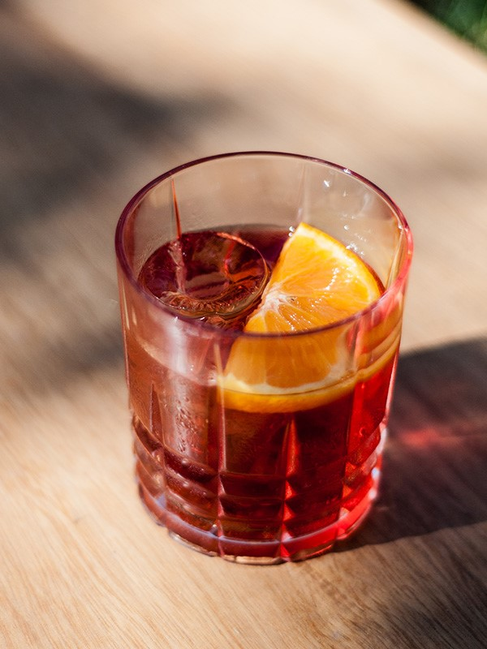

Recetas para tu Gin
Negroni:
- 30 ml de Campari
- 30 ml de gin
- 30 ml de vermut rojo
- Piel de naranja
- Hielo

Gin tonic:
- 50 ml de gin
- 200 ml de tónica
- 1 rodaja de naranja o limón
- Hielo
- Opcional: Una o dos bayas de enebro

Gin Fizz:
- 60 ml gin
- 30 ml jugo de limón
- 20 ml almíbar
- soda para rellenar
- 4 cubitos de hielo
- cáscara de limón, grosellas o una guinda para la decoración
- clara de huevo (opcional)

Martini:
- 2.5 oz (75 ml) gin
- 1 oz (30 ml) vermouth (martini seco)
- 2 aceitunas
- corteza de limon
- 4 cubos de hielo

Cyn tonic:
- 50 ml. de gin
- 25 ml. de Cynar
- Agua tónica
- Hielo
- Una rama de eucalipto para la decoración